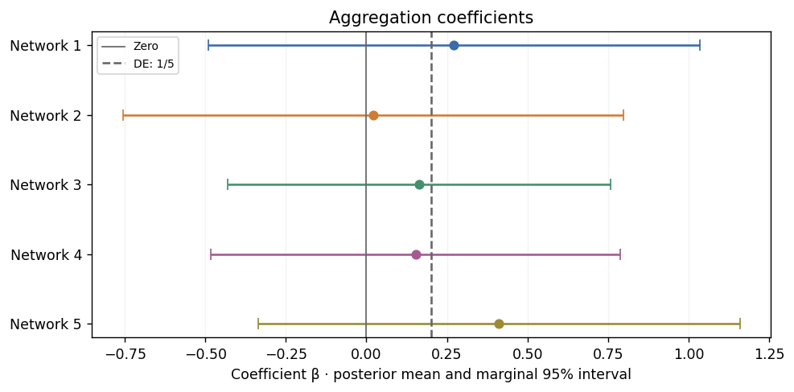
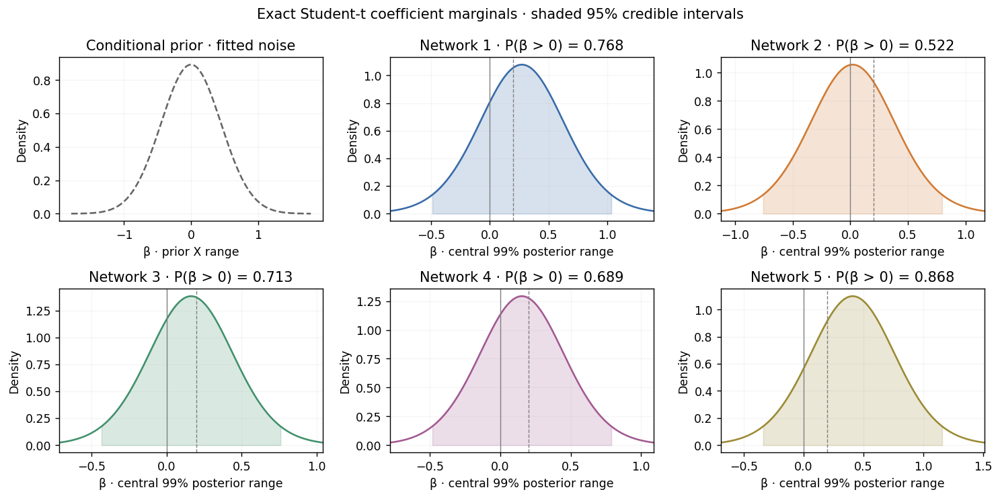
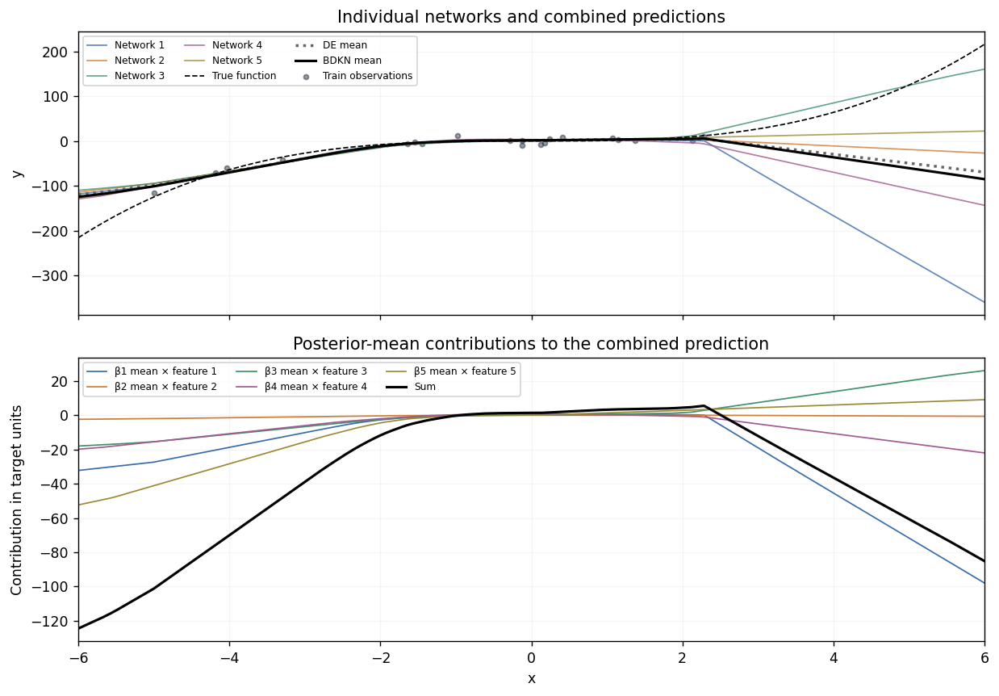
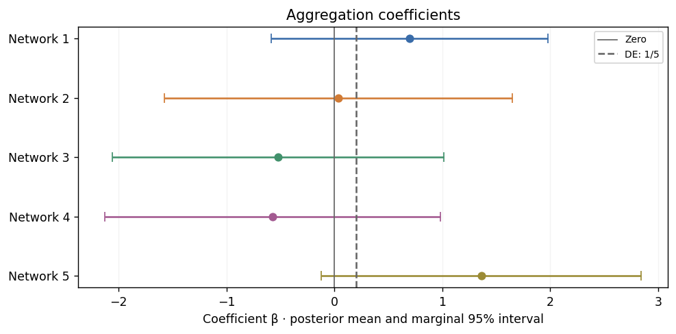
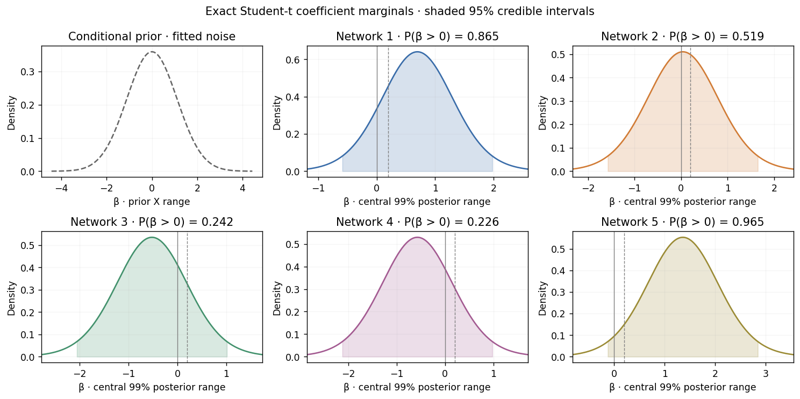
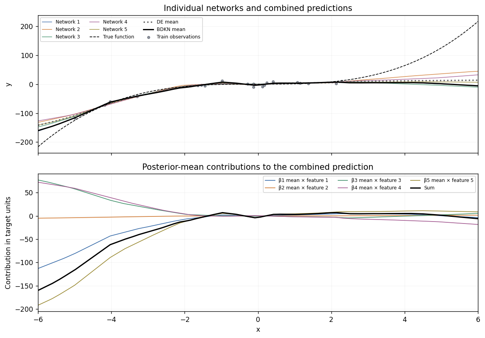
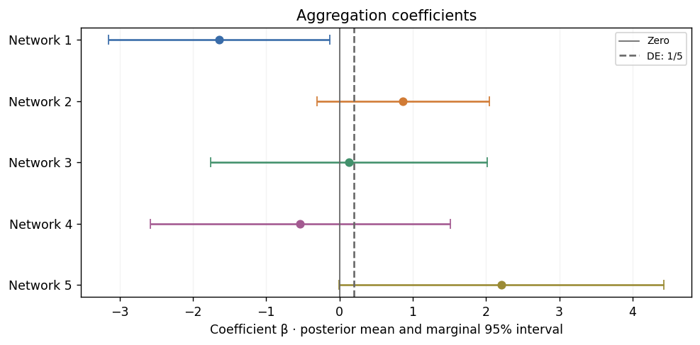
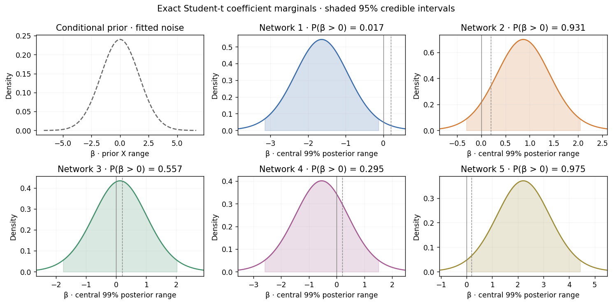
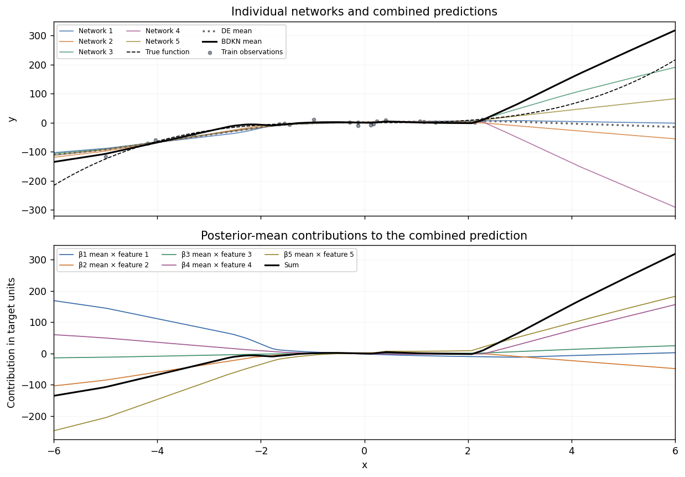

Regression comparison
Download resultsAggregation weights
Coefficients can be negative and need not sum to one. Intervals describe coefficient uncertainty; the dashed reference is DE’s fixed 1/H weight.
BDKN


Each density panel uses its own X range for readability; coefficient intervals above share a common axis. Prior reference conditions on fitted noise. Contribution shares use held-out inputs; test targets are used only for scoring.
| Network | β mean | 95% low | 95% high | P(β > 0) | Contribution share | Test RMSE | Test NLL |
|---|---|---|---|---|---|---|---|
| 1 | 0.57940 | -0.75116 | 1.90995 | 0.81274 | 0.32283 | 58.66186 | 34.93753 |
| 2 | 0.81495 | -0.27511 | 1.90500 | 0.93272 | 0.45401 | 59.02336 | 73.59532 |
| 3 | 0.00756 | -1.36568 | 1.38079 | 0.50452 | 0.00423 | 59.41621 | 34.48789 |
| 4 | -0.05790 | -1.30481 | 1.18901 | 0.46190 | 0.03097 | 61.53888 | 39.27997 |
| 5 | -0.32976 | -1.44246 | 0.78294 | 0.27171 | 0.18796 | 59.14333 | 38.97010 |
Functional repulsion · BDKN



Each density panel uses its own X range for readability; coefficient intervals above share a common axis. Prior reference conditions on fitted noise. Contribution shares use held-out inputs; test targets are used only for scoring.
| Network | β mean | 95% low | 95% high | P(β > 0) | Contribution share | Test RMSE | Test NLL |
|---|---|---|---|---|---|---|---|
| 1 | 0.27213 | -0.48968 | 1.03395 | 0.76757 | 0.44464 | 178.04585 | 112.06660 |
| 2 | 0.02036 | -0.75634 | 0.79706 | 0.52154 | 0.01057 | 69.99011 | 41.88748 |
| 3 | 0.16301 | -0.43148 | 0.75750 | 0.71314 | 0.17059 | 24.31971 | 6.57108 |
| 4 | 0.15290 | -0.48287 | 0.78866 | 0.68931 | 0.14653 | 108.11033 | 47.46472 |
| 5 | 0.41159 | -0.33625 | 1.15943 | 0.86776 | 0.22767 | 53.08227 | 33.25203 |
Weight repulsion · BDKN



Each density panel uses its own X range for readability; coefficient intervals above share a common axis. Prior reference conditions on fitted noise. Contribution shares use held-out inputs; test targets are used only for scoring.
| Network | β mean | 95% low | 95% high | P(β > 0) | Contribution share | Test RMSE | Test NLL |
|---|---|---|---|---|---|---|---|
| 1 | 0.69693 | -0.58573 | 1.97958 | 0.86477 | 0.21590 | 59.10084 | 71.11351 |
| 2 | 0.03704 | -1.57253 | 1.64660 | 0.51890 | 0.01388 | 45.61936 | 39.69220 |
| 3 | -0.52349 | -2.05820 | 1.01122 | 0.24249 | 0.15456 | 61.69444 | 33.46873 |
| 4 | -0.57170 | -2.12381 | 0.98040 | 0.22563 | 0.19481 | 50.75513 | 29.03655 |
| 5 | 1.36042 | -0.12177 | 2.84261 | 0.96502 | 0.42085 | 56.85453 | 388.71688 |
First-order repulsion · BDKN



Each density panel uses its own X range for readability; coefficient intervals above share a common axis. Prior reference conditions on fitted noise. Contribution shares use held-out inputs; test targets are used only for scoring.
| Network | β mean | 95% low | 95% high | P(β > 0) | Contribution share | Test RMSE | Test NLL |
|---|---|---|---|---|---|---|---|
| 1 | -1.63791 | -3.14825 | -0.12758 | 0.01749 | 0.19962 | 62.35717 | 38.22963 |
| 2 | 0.86846 | -0.30535 | 2.04227 | 0.93079 | 0.14050 | 79.24693 | 48.85926 |
| 3 | 0.13079 | -1.76060 | 2.02218 | 0.55662 | 0.03806 | 26.91972 | 8.56709 |
| 4 | -0.53693 | -2.58520 | 1.51134 | 0.29528 | 0.19633 | 156.35768 | 113.75364 |
| 5 | 2.21276 | -0.00496 | 4.43049 | 0.97477 | 0.42549 | 37.16326 | 234247867.82610 |